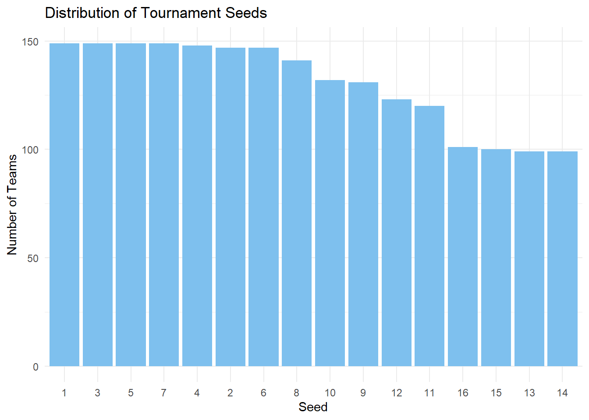
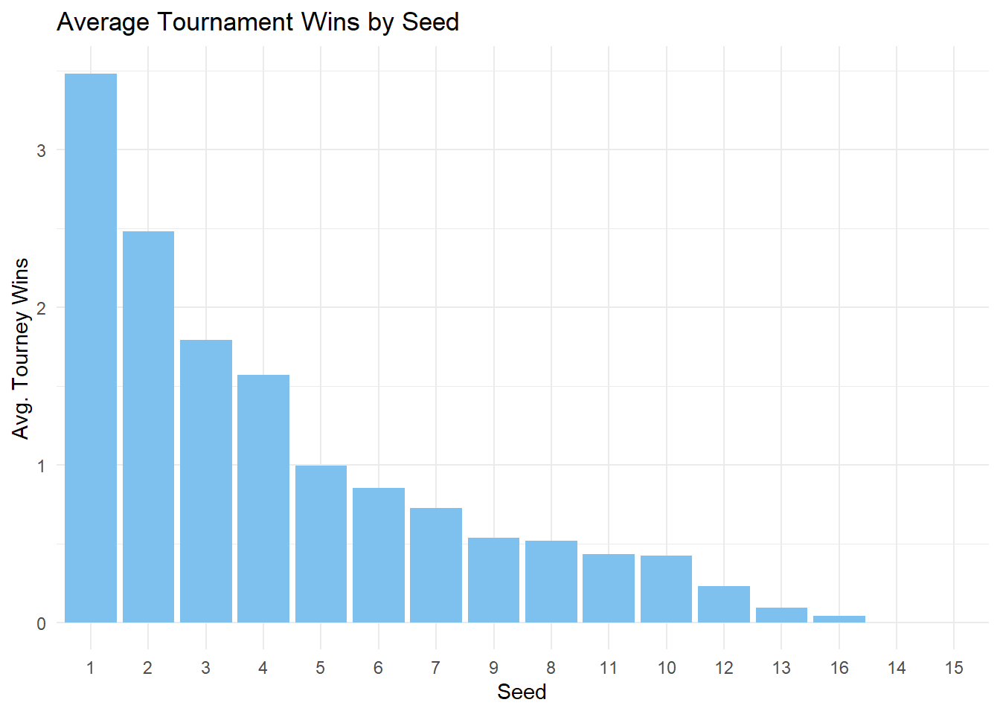
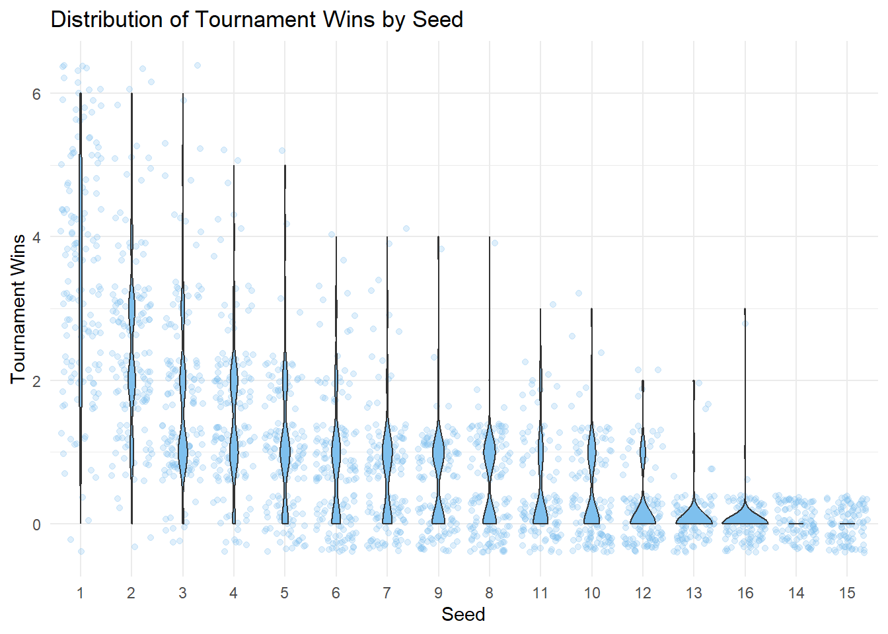
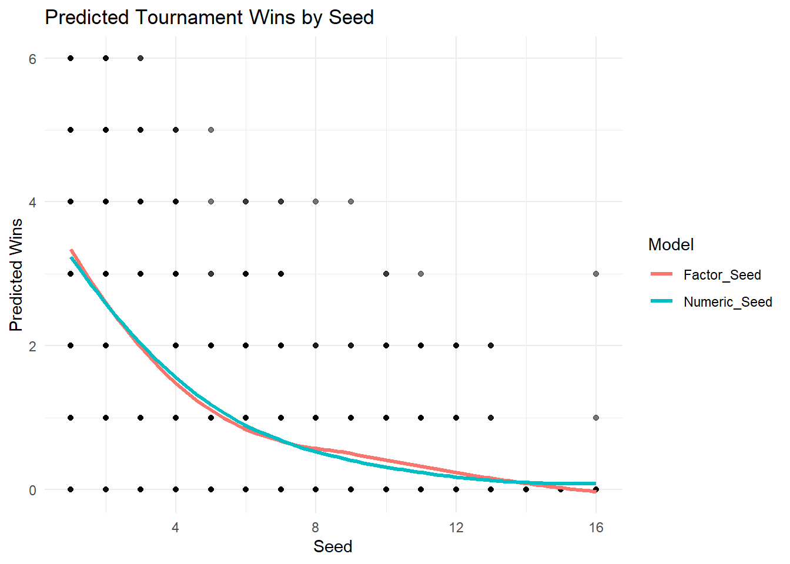
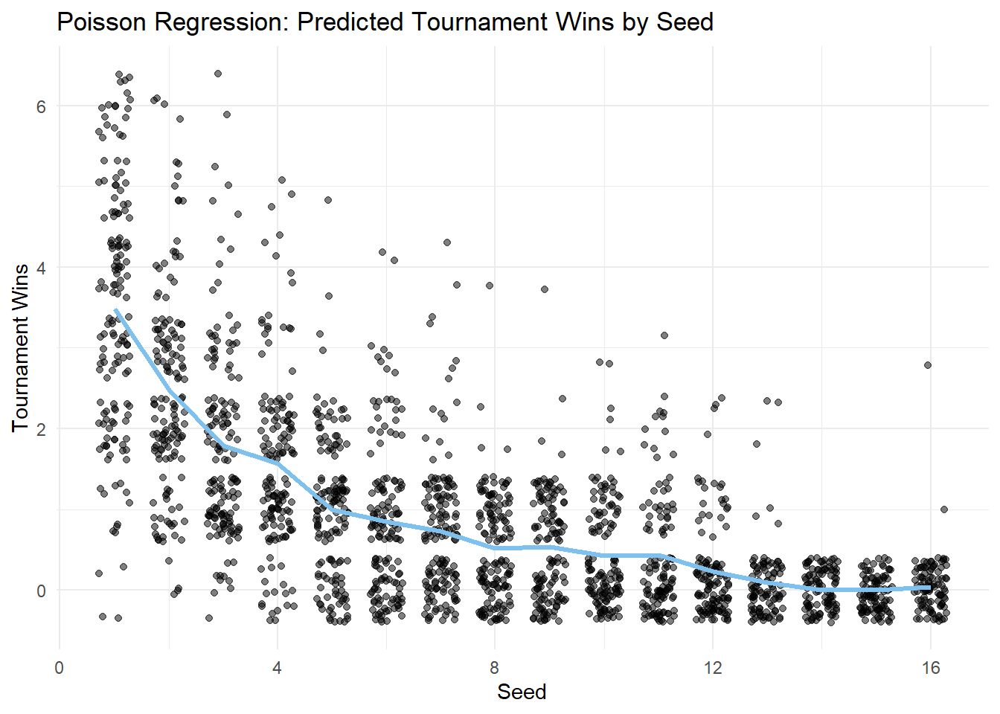

library(tidyverse)
library(AER)
library(broom)
library(knitr)
library(MASS)Key Features of the Dataset
Each row represents a single team’s appearance in a specific tournament year and includes information such as:
Tournament Seed – Seed assigned to the team
Tournament Results – Number of wins, losses, and how far the team advanced
Bid Type – Whether the team received an automatic bid or was selected at-large.
Season Records – Regular season, conference, and total win/loss stats and percentages
Conference Information – Team’s conference name, record, and rank within the conference
Division – Regional placement in the tournament bracket (e.g., East, West)
Home Game Indication – Whether the team played its first game at home
Purpose and Use Cases
This data set is designed to support analysis of:
Team performance over time
Impact of seeding and bid types on tournament results
Conference strength
Emergence and decline of winning teams in women’s college basketball
Case Study
Objective
How much does a team’s tournament seed predict its success in the NCAA Division I Women’s Basketball Tournament?
This analysis explores the relationship between a team’s seed and its results on a tournament to evaluate whether teams with lower seeds consistently outperform ones with higher seeds.
By examining historical data, we aim to:
- Identify trends in tournament advancement by seed level
Seeding is intended to reflect a team’s regular-season performance. In theory, lower-numbered seeds (e.g., #1, #2) are given to the strongest teams, who should be more likely to advance. But upsets, bracket surprises, and standout performances from lower seeds raise questions like “How reliable is seeding as a predictor of success?”
Understanding these dynamics can inform fan expectations and bracket predictions.
Analysis
We should load the necessary libraries we will be using.
1. Data Cleaning & Processing
First, let’s load our data and remove all NA values for our variables of interest seed and tourney_wins.
# Reading Data
marchmadness <- read_csv("../../data/clean/womensmarchmadness.csv")
# Review total rows
nrow(marchmadness)[1] 2092# Removing NA but only in selected columns
marchmadness <- marchmadness |> drop_na(seed, tourney_wins)
# Notice no rows were removed
nrow(marchmadness)[1] 2092Note that, the seed = 0 designation in 1983 notes the eight teams that played an opening-round game to become the No.8 seed in each region. For this exercise, we will not take them into consideration. Since seed is an ordinal categorical variable, we can set it as an ordered factor.
marchmadness <- marchmadness |>
filter(seed != 0)2. Exploratory Data Analysis
We can see which seeds appear more often.
seed_count <- marchmadness |>
count(seed) |>
arrange(desc(n)) |>
mutate(seed = factor(seed, levels = seed))
ggplot(
seed_count,
aes(x = seed, y = n)
) +
geom_col(fill = "skyblue2") +
labs(
title = "Distribution of Tournament Seeds",
x = "Seed",
y = "Number of Teams") +
theme_minimal()
We can also take a look at the average tournament wins for each seed:
marchmadness |>
filter(!is.na(seed), seed != 0) |>
group_by(seed) |>
summarise(
avg_tourney_wins = mean(tourney_wins, na.rm = TRUE)
) |>
arrange(desc(avg_tourney_wins)) |>
mutate(seed = factor(seed, levels = seed)) |>
ggplot(
aes(
x = as.factor(seed),
y = avg_tourney_wins)
) +
geom_col(fill = "skyblue2") +
labs(
title = "Average Tournament Wins by Seed",
x = "Seed",
y = "Avg. Tourney Wins"
) +
theme_minimal()
We can note that a teams with a higher seed tend to win more tournaments! We can also see the total amount of tourney wins for each seed.
seed_order <- marchmadness |>
filter(!is.na(seed), seed != 0) |>
group_by(seed) |>
summarise(avg_wins = mean(tourney_wins, na.rm = TRUE)) |>
arrange(desc(avg_wins)) |>
pull(seed)
marchmadness |>
filter(!is.na(seed), seed != 0) |>
mutate(seed = factor(seed, levels = seed_order)) |>
ggplot(
aes(x = seed, y = tourney_wins)
) +
geom_violin(fill = "skyblue2") +
labs(
title = "Distribution of Tournament Wins by Seed",
x = "Seed",
y = "Tournament Wins"
) +
theme_minimal()
3. Seed Treatment: Numeric vs Factor
An important decision on this analysis is whether to use seed as a numeric or an ordered categorical predictor. Treating seed as a numeric explanatory variable assumes that the effect of seed is linear on the log scaled of the amount of tourney_wins.
To test if this assumption is appropriate, we can compare models that make different assumptions about seed. We’ll create models using seed as both a numeric variable and a factor.
However, first, we need to encode seed as an ordered factor.
marchmadness_factor <- marchmadness |>
mutate(seed = as.ordered(seed)) |>
mutate(seed = fct_relevel
(seed,
c("1", "2", "3", "4", "5",
"6", "7", "8", "9", "10",
"11", "12", "13", "14", "15",
"16")))Given that we’re setting tourney_wins as a response, our linear regression model may output negative values at high seed values. Therefore, a Poisson Regression model is better suited, considering that tourney wins is a count variable and is always non-negative.
options(contrasts = c("contr.treatment", "contr.sdif"))
poisson_model <- glm(tourney_wins ~ seed, family = "poisson", data = marchmadness)
poisson_model_factor <- glm(tourney_wins ~ seed, family = "poisson", data = marchmadness_factor)We can visualize how the two models fit the data to evaluate if treating seed as numeric or factor would have a significant impact on our modelling process.
marchmadness <- marchmadness |>
mutate(
Numeric_Seed = predict(poisson_model, type = "response"),
Factor_Seed = predict(poisson_model_factor, type = "response")
)
plot_data <- marchmadness |>
dplyr::select(seed, tourney_wins, Numeric_Seed, Factor_Seed) |>
pivot_longer(cols = c("Numeric_Seed","Factor_Seed"), names_to = "model", values_to = "predicted")
ggplot(plot_data, aes(x = seed, y = predicted, color = model)) +
geom_point(aes(y = tourney_wins), alpha = 0.3, color = "black") +
geom_line(stat = "smooth", method = "loess", se = FALSE, linewidth = 1.2) +
labs(title = "Predicted Tournament Wins by Seed",
x = "Seed",
y = "Predicted Wins",
color = "Model") +
theme_minimal()
Visually, both models don’t appear to be significantly different from each other. Now, if we wanted to formally evaluate which is the better approach we could use likelihood-based model selection tools.
kable(glance(poisson_model), digits = 2)| null.deviance | df.null | logLik | AIC | BIC | deviance | df.residual | nobs |
|---|---|---|---|---|---|---|---|
| 3438.76 | 2083 | -2117.42 | 4238.84 | 4250.12 | 1610.34 | 2082 | 2084 |
kable(glance(poisson_model_factor), digits = 2)| null.deviance | df.null | logLik | AIC | BIC | deviance | df.residual | nobs |
|---|---|---|---|---|---|---|---|
| 3438.76 | 2083 | -2079.52 | 4191.04 | 4281.31 | 1534.54 | 2068 | 2084 |
Based on lower residual deviance, higher log-likelihood, and a lower AIC, the model that treats seed as a factor fits the data better. This would suggest that the relationship between tournament seed and number of wins is not linear, and would support using an approach that does not assume a constant effect per unit change in seed.
However, before deciding on using a more complex model, we can evaluate if this complexity offers a significantly better modeling approach. To do this, we can perform a likelihood ratio test.
\(H_0\): Model poisson_model fits the data better than model poisson_model_factor
\(H_a\): Model poisson_model_factor fits the data better than model poisson_model
anova_result <- tidy(anova(poisson_model, poisson_model_factor, test = "Chisq"))
kable(anova_result, digits = 2) | term | df.residual | residual.deviance | df | deviance | p.value |
|---|---|---|---|---|---|
| tourney_wins ~ seed | 2082 | 1610.34 | NA | NA | NA |
| tourney_wins ~ seed | 2068 | 1534.54 | 14 | 75.79 | 0 |
These results indicate strong evidence that the model with seed treated as a factor fits the data significantly better than treating it as a numeric predictor. Therefore, we will proceed by using seed as a factor.
4. Overdispersion Testing
It is noteworthy that Poisson assumes that the mean is equal to the variance of the count variable. If the variance is much greater, we might need a Negative Binomial model. We can do an dispersion test to evaluate this matter.
Letting \(Y_i\) be the \(ith\) Poisson response in the count regression model, in the presence of equidispersion, \(Y_i\) has the following parameters:
\(E(Y_i)=\lambda_i, Var(Y_i)=\lambda_i\)
The test uses the following mathematical expression (using a \(1+\gamma\) dispersion factor):
\(Var(Y_i)=(1+\gamma)*\lambda_i\)
with the hypotheses:
\(H_0:1 + \gamma = 1\)
\(H_a: 1 + \gamma > 1\)
When there is evidence of overdispersion in our data, we will reject \(H_0\).
kable(tidy(dispersiontest(poisson_model_factor)), digits = 2)| estimate | statistic | p.value | method | alternative |
|---|---|---|---|---|
| 0.96 | -0.56 | 0.71 | Overdispersion test | greater |
Since the P-value (0.71) is much greater than 0.05, we fail to reject the null hypothesis. This suggests that there is no significant evidence of overdispersion in the Poisson model.
5. Hypothesis Testing: Are Seed and Wins Associated?
summary_model <- tidy(poisson_model_factor) |>
mutate(exp_estimate = exp(estimate)) |>
mutate_if(is.numeric, round, 3) |>
filter(p.value <= 0.05)
kable(summary_model, digits = 2)| term | estimate | std.error | statistic | p.value | exp_estimate |
|---|---|---|---|---|---|
| seed2-1 | -0.34 | 0.07 | -4.96 | 0.00 | 0.71 |
| seed3-2 | -0.33 | 0.08 | -4.05 | 0.00 | 0.72 |
| seed5-4 | -0.46 | 0.10 | -4.34 | 0.00 | 0.63 |
| seed8-7 | -0.34 | 0.15 | -2.22 | 0.03 | 0.71 |
| seed12-11 | -0.64 | 0.23 | -2.75 | 0.01 | 0.52 |
| seed13-12 | -0.92 | 0.38 | -2.40 | 0.02 | 0.40 |
Based on these results, we can see that seed is significantly associated with tourney_wins, particularly in changes in levels between lower seeds. These results can be interpreted as:
Seed 2 teams win 29% (1-0.71) fewer games than seed 1.
Seed 3 teams win 28% fewer games than seed 2.
Seed 5 teams win 37% fewer games than seed 4.
Seed 8 teams win 29% fewer games than seed 7.
Seed 12 teams win 48% fewer games than seed 11.
Seed 13 teams win 60% fewer games than seed 12.
This conclusion is easier to interpret visually, so, let’s plot our Poisson regression model to view the impact of seed on tourney_wins:
marchmadness$predicted_wins <- predict(poisson_model_factor, type = "response")
model_plot <- ggplot(marchmadness, aes(x = seed, y = tourney_wins)) +
geom_jitter(width = 0.3, alpha = 0.5) +
geom_line(aes(y = predicted_wins), color = "skyblue2", linewidth = 1.2) +
labs(title = "Poisson Regression: Predicted Tournament Wins by Seed",
x = "Seed",
y = "Tournament Wins") +
theme_minimal()
model_plot
Discussion
This analysis examined the relationship between a team’s tournament seed and its performance in the NCAA Division I Women’s Basketball Tournament. The results suggest that:
Seed strongly predicts performance: Lower-numbered seeds (higher-ranked teams) tend to win more games on average. The correlation between seed and wins was statistically significant, with higher seeds associated with fewer wins.
Poisson regression supports seeding as a predictor: The Poisson regression model confirmed that seed is a significant predictor of tournament wins, particularly for selected levels, as expected for a count variable like wins.
Model assumptions are key: Treating seed as a numeric variable would have assumed a linear effect across all seed values, which would have oversimplified the relationship with the outcome. Ensuring that explanatory variables are appropriately coded is key. In this case,
seedoffered improved insight when encoded as an ordered factor.There is a lot of variation around the prediction: While seeding generally reflects team strength, upsets and unexpected performances do occur, showing that other factors also influence tournament outcomes.
Seeding is an important predictor of success, but clearly other factors influence the results. It sets expectations, but unexpected performances still shape March Madness.